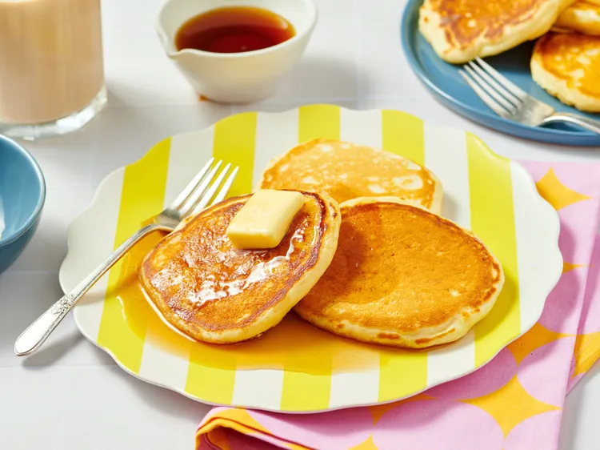

Home
Old Fashioned Pancakes

Description
Perfect pancakes are easier to make than you think. This pancake recipe
produces thick, fluffy, and all-around delicious pancakes with just a few
ingredients that are probably already in your kitchen (and it's so much
better than the boxed stuff).
Ingredients
- Flour
- Baking powder
- Salt
- Milk and butter
- Egg
Steps
- Gather all ingredients
-
Sift flour, baking powder, sugar, and salt together in a large bowl.
Make a weill in the center and add milk, melted butter, and egg; mix
until smooth.
-
Heat a lightly oiled griddle or pan over medium-high heat. Pour or scoop
the batter onto the griddle, using approximately 1/4 cup for each
pancake; cook until bubbles form and the edges are dry, about 2 to 3
minutes.
-
Flip and cook until browned on the other side. Repeat with remaining
batter.
- Serve and enjoy!